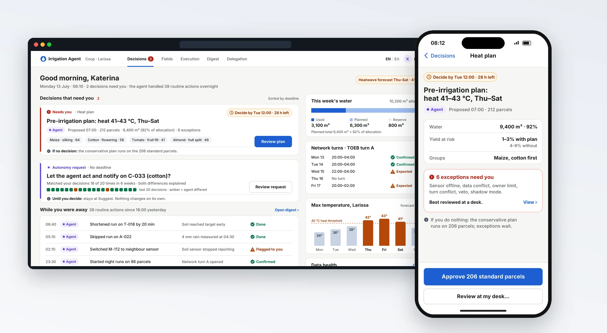
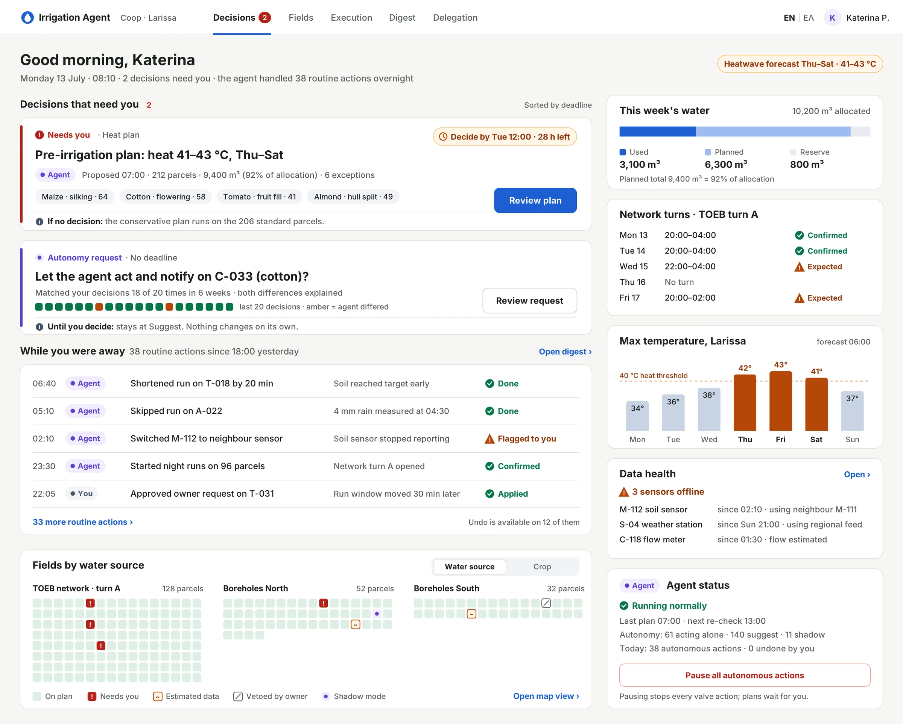
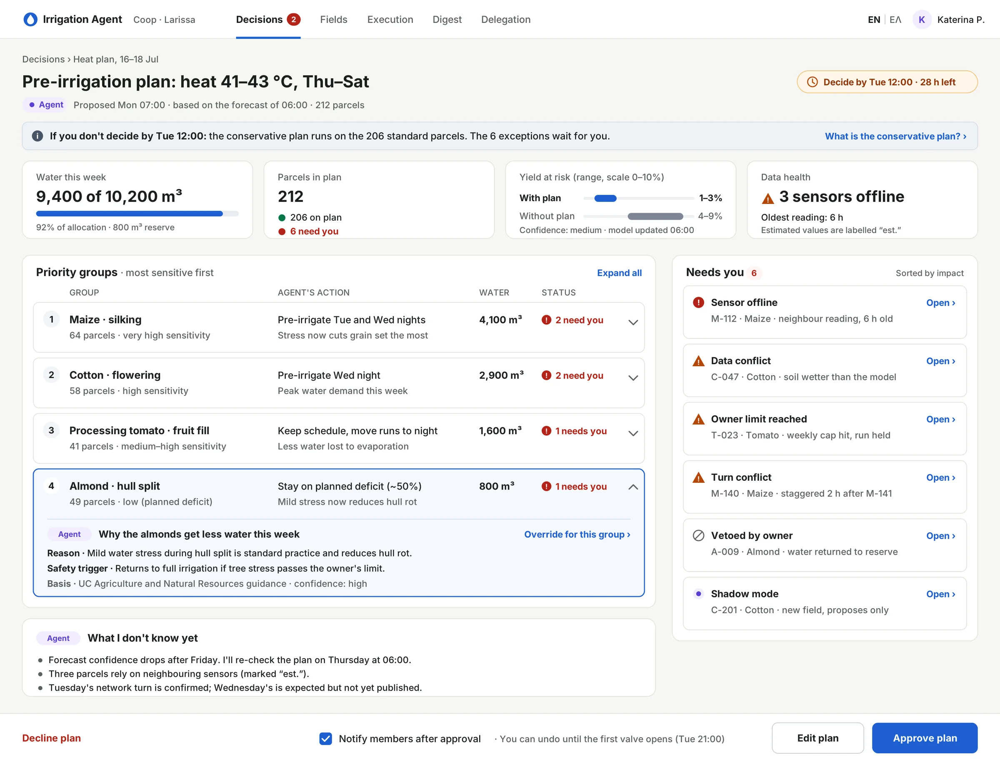
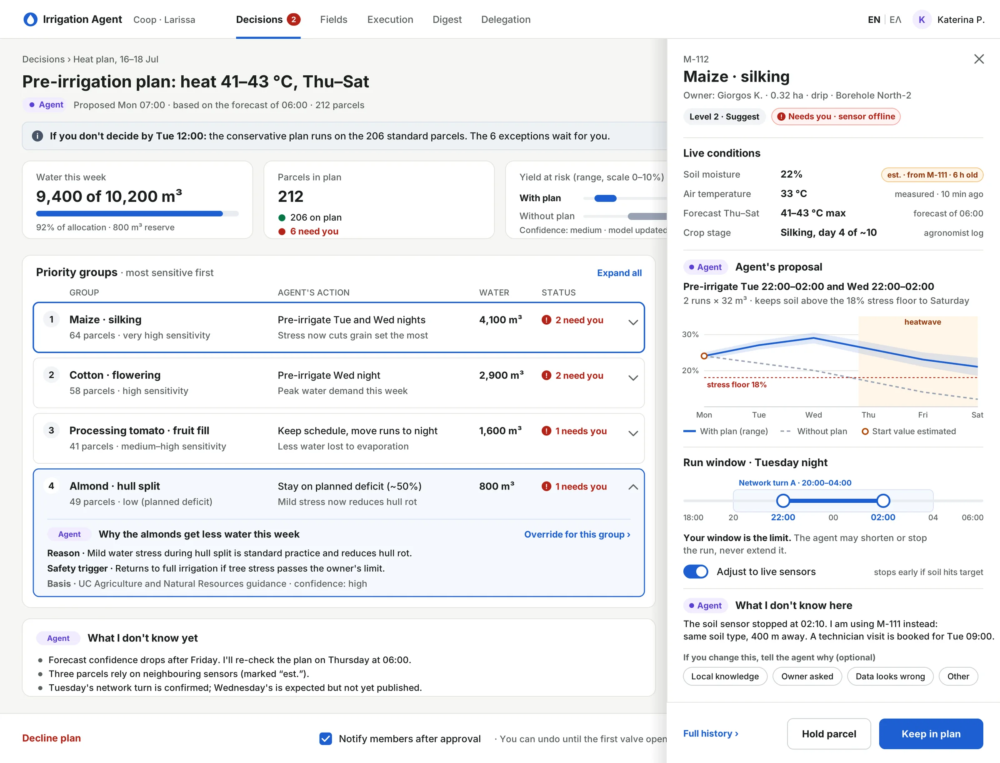
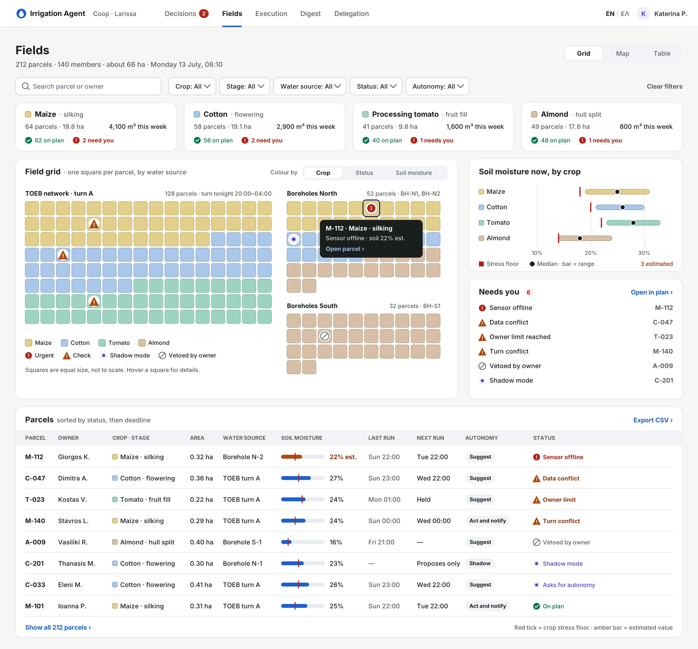
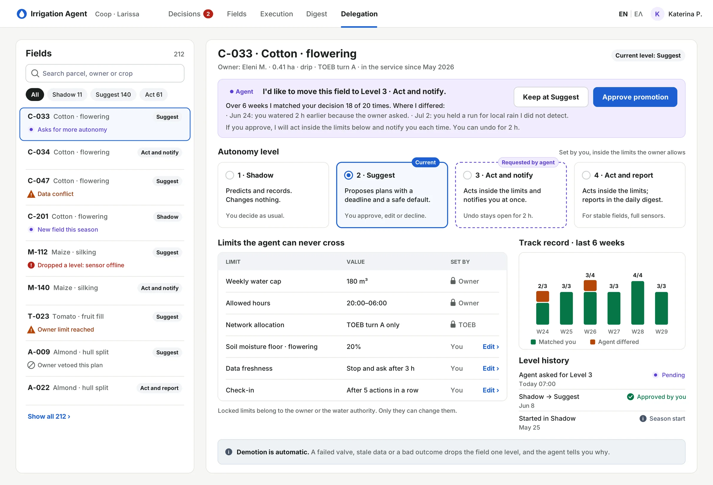
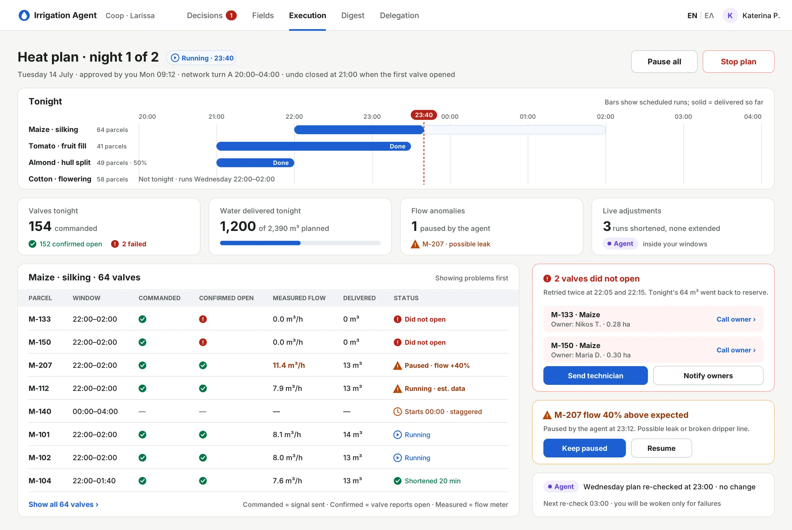
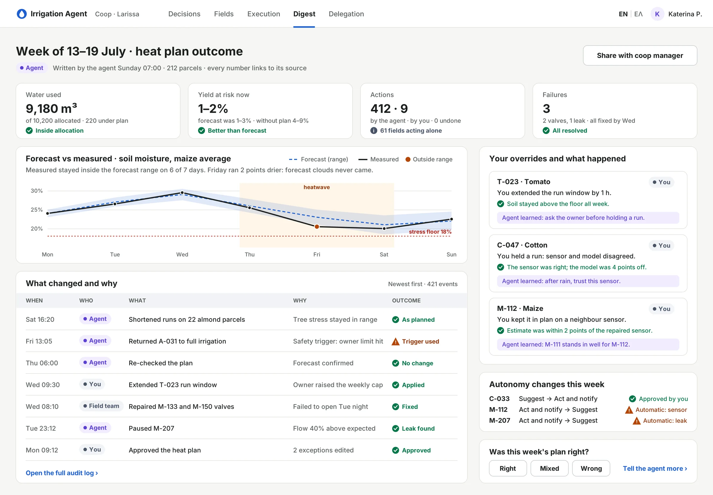
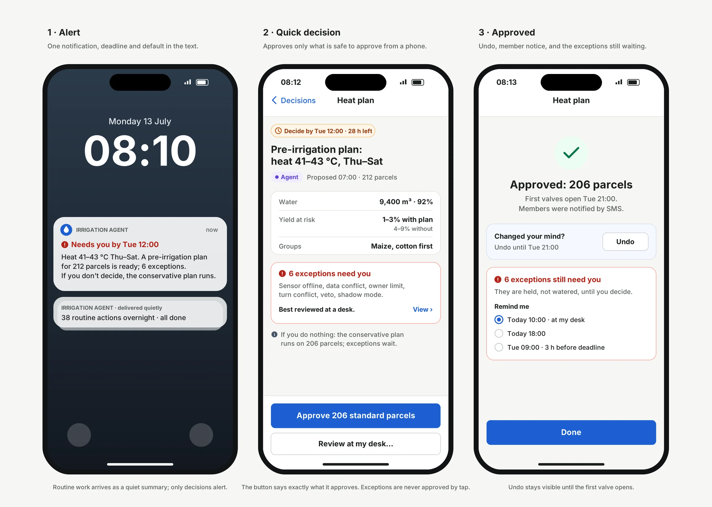
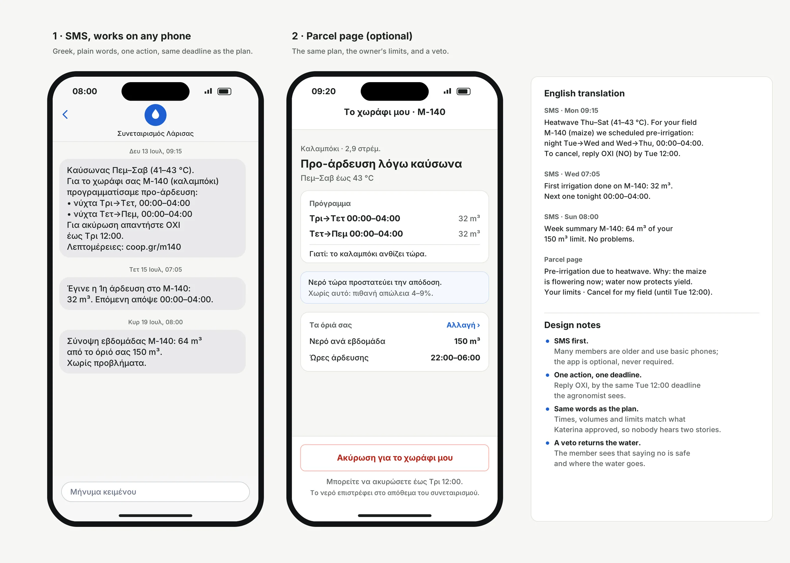

Agentic Irrigation (Case Study)
An AI agent plans irrigation for 212 small parcels of a farming cooperative in Thessaly. This case study designs how one agronomist delegates to it, supervises it and takes control back, before, during and after a heatwave.
Tasks
- Desk research
- Agent experience (AX)
- Interaction design
- UI design and design system
- Mobile and SMS flows
- Usability test plan
Self-initiated concept

Overview
Agentic AI moves software from doing what you click to doing work on your behalf. The hard design questions change with it: how much may the agent do alone, how does it show what it plans, what happens when nobody answers, and how does a person take control back?
Irrigation makes those questions concrete. Water is shared and rationed, a late decision is the same as no decision, and a maize field stressed in the wrong week cannot be repaired. I designed the full experience: the delegation model, nine screens, the failure states, and an SMS flow for the farmers who own the land.
A fictional concept. Research is secondary and cited; quotes come from published interviews; all farm data is illustrative.
parcels, one agronomist
Owned by 140 member farmers, about 66 ha in total.
of lead time
The agent plans before the heat arrives, not during it.
need a human
Everything else follows the plan inside agreed limits.
The problem
Greek irrigation is small parcels, shared water and a shrinking supply. One cooperative agronomist may oversee hundreds of parcels, and water arrives in rationed turns. When heat and water limits hit at the same time, she cannot make the right call for every field in time.
Small, fragmented farms
6.6 ha on average in Greece against 15.2 ha in the EU-27; half the farms are under 2 ha.
Thessaly carries the load
86% of Greek water use is irrigation, and about a quarter of it is in Thessaly.
Water arrives in turns
Local land reclamation boards cut both the hours and the frequency of irrigation in dry years.
Timing is everything
In 2025, reservoir water reached Larissa about two weeks late and crops were lost.
Cooperative agronomists cannot make timely, parcel-level water decisions for hundreds of mixed-crop parcels when heat and water limits hit at once. Scarce water goes to the wrong fields at the wrong time.
How might we…
- let an agronomist hand routine irrigation to an agent without losing the ability to step in?
- make a plan for hundreds of parcels reviewable in under three minutes?
- make “no answer” a safe answer when the human is busy?
- let trust grow, or shrink, field by field, based on the agent’s track record?
- keep each farmer in control of their own parcel while the cooperative coordinates the water?
Desk research
No interviews were run for this concept. I reviewed Greek press coverage of the 2024 and 2025 irrigation seasons, studies on how farmers adopt decision-support tools, and human-factors research on trust in automation. Every finding below led to a design decision.
“…when it finally arrived after 15 days, it was already too late…”
“…you can still waste water if you irrigate when the plant doesn’t need it.”
| What the evidence says | What the design does about it |
|---|---|
| Timing decides outcomes, and water arrives in rationed turns. | The agent plans 72 hours ahead, inside the turns, and every decision has a deadline. |
| Greek water use is mostly estimated, not measured. | Every value says whether it is measured or estimated, and how old it is. |
| Farmers hesitate to swap a trusted advisor for a program that behaves like a black box. | The agronomist stays in the loop as the trusted advisor; the agent explains every action. |
| Farmers differ in confidence; ease of adoption and peer use matter more than persuasion. | Autonomy is set per field, and new fields start in a no-risk shadow mode. |
| Automation bias affects experts too, and training does not prevent it. | Exceptions come first, the test plants a deliberate error, and trust is measured as calibration. |
| The leading Greek platform is described as a management and advisory system. | Supervised execution is the gap this concept explores. |
Who it is for
Katerina, cooperative agronomist (assumption-based persona)
- Supervises irrigation for 212 parcels near Larissa: maize, cotton, processing tomato and almonds.
- Plans at her desk early; spends the day driving between members, reachable by phone.
- Wants to protect yield at the crop stages that matter, never exceed the allocation, and keep members’ trust.
- Willing to delegate routine timing; not willing to delegate trade-offs between members without seeing them.
Everyone else in the loop
- Member farmer: owns the parcel, sets its limits, can veto.
- Cooperative manager: answers for water use; is the escalation if Katerina is unreachable.
- Water authority (TOEB): sets the turns; its allocation is a hard limit.
- The agent: plans, acts inside its permissions, and asks when it should.
The scenario: a heatwave seen three days out
On Monday the forecast shows 41–43 °C from Thursday to Saturday, and the water authority has already cut this week’s hours. The agent drafts a pre-irrigation plan for 212 parcels; Katerina decides by Tuesday noon.
One alert
A plan is ready, with a deadline and a safe default if she does not answer.
Plan review
She approves the plan in one go and opens only the six exceptions.
Execution
Night runs inside the water turns; two valves fail and one leak is paused.
Live adjustment
The agent re-checks the plan every morning and shortens runs where soil reaches its target. It never extends them.
Digest
Outcome against forecast, every change and why, and what the agent learned.
Members informed
Each farmer gets an SMS in Greek with the same times, volumes and deadline.
| Crop | Stage this week | Agent’s plan | Why |
|---|---|---|---|
| Maize | Silking | Pre-irrigate Tue and Wed nights, first priority | Water stress at silking causes the largest grain loss (FAO). |
| Cotton | Flowering | Pre-irrigate Wed night | Peak water demand this week. |
| Processing tomato | Fruit fill | Keep the schedule, move runs to night | Less water lost to evaporation. |
| Almond | Hull split | Stay on planned deficit (about 50%), with a safety trigger | Mild stress at hull split is a recommended practice that reduces hull rot (UC ANR). |
Design principles
Delegate, don’t just automate
Autonomy is set per field, earned through a track record, and can always be taken back.
Plan before the act, record after
Nothing irreversible runs without a preview; nothing runs without a record.
Every request has a deadline and a default
Silence from the human is a normal state the design handles safely.
Decide at plan level, inspect at field level
One approval for 212 parcels; only the exceptions are opened.
Uncertainty is information
Forecasts are ranges, data shows its age, and the agent says when it is guessing.
Physical truth over commands
A valve commanded is not a valve open: commanded, confirmed and measured are shown separately.
Trust is a lifecycle, not a screen
The story is told in four acts, because trust in an agent is built before the crisis and repaired after it. The heatwave is one chapter, not the whole story.
1 · Shadow mode
The agent predicts and records what it would do, and changes nothing.
2 · Earning autonomy
When its record supports it, the agent asks for more freedom. The human approves.
3 · The heatwave
A farm-wide plan 72 h ahead, with a deadline and a safe default.
4 · Review
A digest of what ran, what changed and what failed, and what was learned.
Outcomes and overrides move each field’s autonomy up or down. Failures demote automatically.
The delegation contract
The “autonomy dial” lives here, per field, instead of as one global switch. For each field it records how much the agent may do alone, and which limits it can never cross.
Shadow
Predicts and records. Changes nothing.
Suggest
Proposes a plan with a deadline and a safe default.
Act and notify
Acts inside the limits and notifies at once; undo stays open.
Act and report
Acts inside the limits and reports in the daily digest.
Limits the agent can never cross
- The parcel’s and the cooperative’s water allocation.
- A soil-moisture floor for each crop stage.
- The owner’s limits: weekly water, allowed hours.
- Stop and ask when data is older than the freshness limit.
Who sets what
- The farmer sets the outer limits and can veto.
- The agronomist sets the level inside those limits.
- The agent can only propose a change, never make one.
- Demotion is automatic after a failure, with a reason.
Colours, type and status
A quiet, light interface built for glare and for scanning. Colour always carries meaning, and it is never the only signal: every status has an icon and a word.
Core
Status
Crops
Type · Inter
Heat plan
Pre-irrigation plan: heat 41–43 °C
Maize · silking · 64 parcels
Proposed 07:00 · 212 parcels · 9,400 m³
Ελληνικά πρώτα · 0123456789 m³ °C
Status always has an icon and a word
- Light mode by default: alerts are read outdoors.
- WCAG 2.2 AA: every text colour, status colours included, is at least 4.5:1.
- Forecasts drawn as ranges, never a single line.
- Tabular numbers, metric units, 24-hour time, Greek first.
The screens
Nine screens carry the story: the heatwave decision first, then the views that support it.
01 Dashboard: decisions first

The home screen is a queue of decisions sorted by deadline, not a map. In management by exception, a short list beats scanning for red tiles. Each decision says what happens if nobody answers.
Key choices: routine work arrives as a quiet summary with undo; a kill switch pauses every autonomous action; the field grid stays as a secondary view.
02 Plan review: one decision for 212 parcels

The hero screen. A deadline and a default sit at the top; the plan is grouped by crop stage, most sensitive first; the six exceptions sit beside it. The almond row explains, in one line, why the most valuable crop gets less water.
Key choices: yield at risk is a range, not “+12%”; the agent lists what it does not know; approve, edit and decline live in one sticky bar.
03 Field drawer: inspect without losing the plan

The drawer slides over the exceptions, so the plan stays in view. It shows live conditions with their source and age, a soil-moisture forecast with and without the plan, and a run window bounded by the water turn.
Key choices: “Your window is the limit; the agent may shorten or stop the run, never extend it.” One optional tap tells the agent why you changed something.
04 Fields: every parcel at a glance

One equal square per parcel, grouped by water source and coloured by crop, with the six exceptions marked by their status icon. Soil moisture by crop is drawn against each crop’s stress floor, and the table below sorts by status.
Key choice: I tried a geographic map first and replaced it with squares. Irregular shapes made the exceptions harder to find, and position on a map mattered less than the water source.
05 Delegation contract: autonomy is earned

The agent asks for more freedom and shows its evidence: it matched Katerina’s decisions 18 times out of 20 in six weeks, and it explains both misses. Locked limits show who owns them: the farmer or the water authority.
06 Execution monitor: physical truth

An agent that controls water fails in the physical world. The monitor separates a valve commanded, confirmed open and measured flowing. Failures are grouped with a next step, and the agent pauses a suspected leak on its own.
07 Weekly digest: close the loop

The agent reports its forecast against what was measured, admits the day it was wrong, and shows what it learned from each override. This is where trust is repaired or earned for the next week.
08 Mobile: decide from the car

Only decisions alert; routine work arrives quietly. The phone button says exactly what it approves, “Approve 206 standard parcels”, and the exceptions are never approved by a tap. Undo stays visible until the first valve opens.
09 Member update: Greek SMS first

Many members are older and use basic phones, so the farmer’s channel is SMS in Greek, with one action and the same deadline Katerina sees. The parcel page is optional. A veto is safe: the water goes back to the cooperative’s reserve.
Designed failure states
Nobody answers
The conservative default runs on standard parcels; exceptions wait; the manager is alerted two hours before the deadline.
Forecast and sensor disagree
Measured data drives actions now; the forecast drives planning; the conflict is shown with both values.
Sensor offline
A neighbour reading stands in and is labelled “est.”; past the freshness limit, the agent stops and asks.
Valve does not open
One retry, then a grouped failure with next steps; the water returns to reserve.
Water turn is cut
The agent re-plans and shows a diff against the plan she approved.
Override goes worse
Recorded without blame and used to calibrate, for both the agent and the person.
What I killed and why
The first draft came out of one AI-assisted session. A critical review changed most of it.
| First version | Replaced by | Why |
|---|---|---|
| Enterprise manager with 1,200 ha of centre pivots in the Peloponnese | Cooperative agronomist in Thessaly, small drip-irrigated parcels | Did not match Greek farm structure or irrigation |
| Simulated interviews shown as research | Cited desk research and an assumption-based persona | Invented quotes are not evidence |
| An alert during the heat spike | A plan 72 hours ahead | Lead time is where the agent adds value |
| “Save the almonds” by cutting almond water | Stage-based priorities with a safety trigger | The original logic contradicted itself |
| One drawer for one field | One plan for 212 parcels, drawer for exceptions | A heatwave hits many fields at once |
| Approve or cancel, plus a slider | Deadline, default and bounded edits | Covers the busy, unreachable human |
| Geographic map as the home screen | Decision queue; square grid as a secondary view | Decisions, not tiles, are the unit of work |
| “+12% yield saved” and red/green status | Ranges with confidence; icon, word and colour | False precision and colour-only status erode trust |
How I would test it
A moderated test with five or six agronomy students or proxy users on a Figma prototype. The centrepiece is a planted error: one plan line wrongly holds water from a maize field at silking, and the test measures whether people catch it.
to decide
From alert to approved plan, for 212 parcels.
catch the planted error
Fewer than half would send me back to the design.
appropriate reliance
Accept when the agent is right, override when it is wrong.
All targets are hypotheses for a concept, not results. I avoided “AI acceptance rate” as a trust metric: a high rate can mean the plan was good, or that people stopped reading. Appropriate reliance separates the two.
What I learned
The agent is not a screen. The interesting design work was the contract between the person and the agent: permissions, limits, deadlines, defaults and how they change over time.
Silence is a user state. Designing for the person who does not answer made every other screen simpler.
Domain errors are design errors. The first draft looked polished and was agronomically wrong. Checking the crop logic changed the hero screen.
Next: interview three cooperative agronomists to test the riskiest assumptions: that they coordinate timing for members, that farmers would let a system open their valves, and that the hardware is there.
How this was made: I worked with AI tools for research, critique and producing the screens. I set the direction, made the design decisions and checked every fact against its source.
Sources
- Greece AKIS brief context (i2connect)
- Farmers in Larissa left without harvest (To Vima, 2025)
- Boreholes are bringing up air, not water (Kathimerini, via Farming Portal, 2024)
- Maize: water supply and crop yield (FAO)
- Managing almond hull rot with regulated deficit irrigation (UC ANR)
- Barriers to adoption of decision support systems (Brugler et al., 2023)
- Technology adoption in Greek and Lithuanian farmers (Payne-Gifford et al., 2020)
- Complacency and bias in human use of automation (Parasuraman and Manzey, 2010)
- Gaiasense (FAO Agritech Observatory)